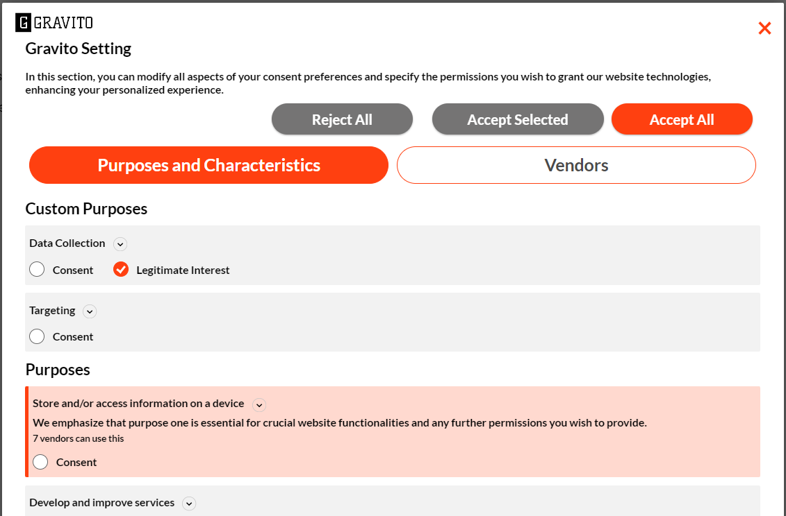
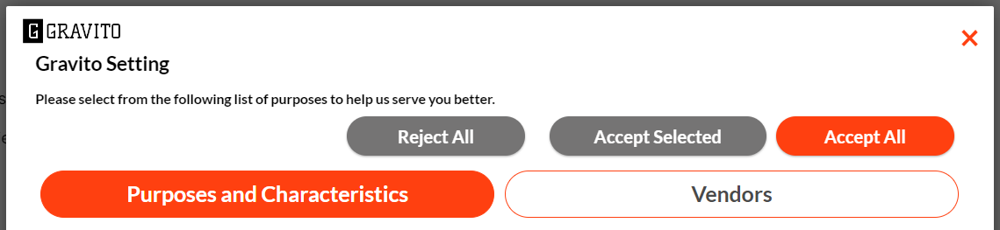
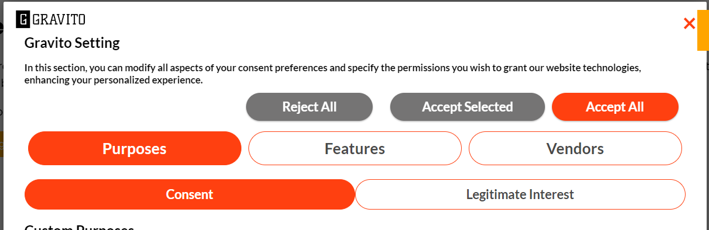
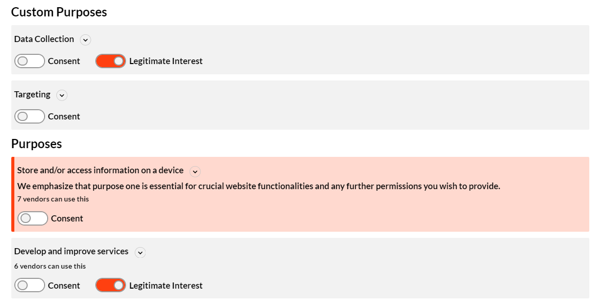
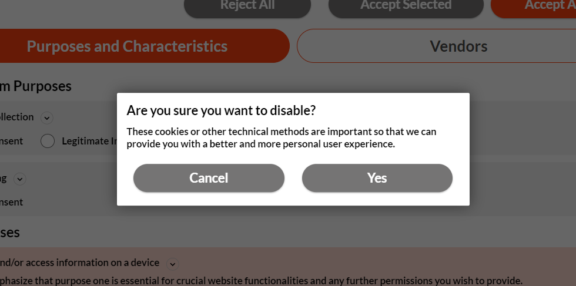
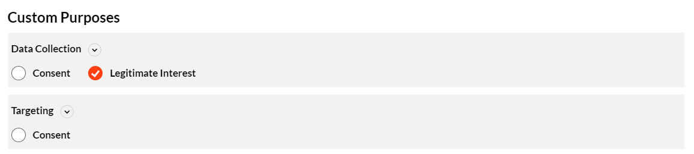

TCF-CMP customizations
Introduction
This document provides information on how to customize the TCF-CMP UI using the CMP config. The config is a JSON object that contains the configurations for the CMP. The config consist of 5 major section(settings, core, text, language, style) each of which handles different aspects of the CMP.
Configurations
The following are the configurations that can be done in CMP config to achieve the desired customization.
| Property Name | Purpose | Datatype | Example |
|---|---|---|---|
| core > highlightedTextForPurpose1 | to highlight first purpose | Boolean |  |
| text > secondLayer > highlightedTextForPurpose1 | Text to be displayed inside highlighted purpose | String | |
| style > highlightColor | color code for highlighting pupose 1 | Color HEX | |
| style > highlightBgColor | color code to be used as background of highlighted purpose | Color HEX | |
| style > buttonsOnTop | to display action buttons above tabs in 2nd layer | Boolean |  |
| style > layoutType | to choose between 2 tab layout or 3 tab layout | select |  |
| style > consentInputType | to choose between toogle or checkbox input for consents | select |  |
| style > disableConfirmationModal | to enable/disable the confirmation modal | Boolean |  |
| style > useAccordionForPurpose | to enable/disable the confirmation modal | Boolean |  |
CSS Customization
CSS customization can be done by adding the custom CSS in the style section of the CMP config. The following are the CSS classes that can be used to customize the CMP.
| Class Name | Purpose |
|---|---|
| .gravitoCMP-modal--layer1 | to customize the CMP layer-1 container |
| .gravitoCMP-header-logo-div | to customize the CMP header logo |
| .gravitoCMP-content--layer1 | to customize the CMP layer-1 content & order |
| .gravitoCMP-footer | to customize the CMP layer-1 footer |
| .gravitoCMP-layer-heading | to customize the CMP layer heading |
| .gravitoCMP-paragraph | to customize the discritpion text |
| .gravitoCMP-privacy | to customize the privacy policy link |
| .gravitoCMP-button | to customize the CMP buttons |
×